In this section, we explain Barwick’s unfurling construction [Barwick (2017)], which extends a contravariant functor \(F\colon C\catop \to \Cat _{\infty }\) to the span category by coherently assembling adjoints. We begin by isolating the required adjointability condition.
Definition 15.1.1. Let \((C,C,C_R)\) be an adequate triple and let \(F\colon C\catop \to \Cat _{\infty }\) be a functor.
- (1)
-
The functor \(F\) is left \(C_R\)-adjointable if, for every \(r\colon X\to Y\) in \(C_R\), the functor \(r^*:=F(r)\colon F(Y)\to F(X)\) admits a left adjoint \(r_!\), and for every pullback square
with \(r,r'\in C_R\), the Beck–Chevalley transformation \[ r'_!{l'}^* \xrightarrow {r'_!{l'}^*\eta _{r}} r'_!{l'}^*r^*r_! \simeq r'_!{r'}^*l^*r_! \xrightarrow {\epsilon _{r'}l^*r_!} l^*r_! \] is a natural isomorphism.
- (2)
-
The functor \(F\) is right \(C_R\)-adjointable if every \(r^*\) admits a right adjoint \(r_*\) and, for every pullback square as above, the dually defined Beck–Chevalley transformation \(l^*r_*\to r'_*{l'}^*\) is a natural isomorphism.
When \(C_R=C\), we simply say that \(F\) is left adjointable or right adjointable.
The trick for extending \(F\) to the span category is by reformulating the problem in terms of (co)cartesian fibrations: starting with the unstraightening of \(F\), we wish to construct the unstraightening of its extension. We now provide a formulation of the adjointability conditions on \(F\) in terms of its associated fibration over \(C\).
Definition 15.1.2. Let \((C,C_L,C_R)\) be an adequate triple. A functor \(p\colon E \to C\) is called a Beck–Chevalley fibration with respect to \((C_L,C_R)\) if the following three conditions are satisfied:
- (1)
-
Every morphism in \(C_L\) admits \(p\)-cartesian lifts with given target.
- (2)
-
Every morphism in \(C_R\) admits \(p\)-cocartesian lifts with given source.
- (3)
-
In a commutative square
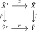
whose image in \(C\) is a pullback square with \(p(\tilde l)\in C_L\) and \(p(\tilde r)\in C_R\), assume that \(\tilde r\) is \(p\)-cocartesian and \(\tilde l'\) is \(p\)-cartesian. Then \(\tilde r'\) is \(p\)-cocartesian if and only if \(\tilde l\) is \(p\)-cartesian.
Conditions (1) and (2) say that the restrictions \(E \times _C C_L \to C_L\) and \(E \times _C C_R \to C_R\) are a cartesian and a cocartesian fibration, respectively. They provide contravariant transport \(l^*\) along \(C_L\), covariant transport \(r_!\) along \(C_R\), and Beck–Chevalley transformations \(r'_!{l'}^* \to l^*r_!\) for pullback squares as above. By choosing cartesian and cocartesian lifts around such a square, one sees that condition (3) is precisely the invertibility of these transformations.
The following result is the key technical input to the unfurling construction.
Theorem 15.1.3. Let \((C,C_L,C_R)\) be an adequate triple and let \(p\colon E \to C\) be a Beck–Chevalley fibration with respect to \((C_L,C_R)\). Set \(E_L^{p\dcart }:=p^{-1}(C_L)\cap E^{p\dcart }\) and \(E_R:=p^{-1}(C_R)\). Then \((E,E_L^{p\dcart },E_R)\) is an adequate triple, and the induced functor \[ \Span (p)\colon \Span _{\ct ,R}(E)\longrightarrow \Span _{L,R}(C) \] is a cocartesian fibration with fiber \(E_X\) over \(X\in C\). Its transport along a span \(X\xleftarrow {l}U\xrightarrow {r}Y\) is \(r_!l^*\).
Here \(\Span _{\ct ,R}(E)\) denotes the span category of the adequate triple just defined. For expository purposes, we postpone the proof to Subsection 15.1.1.
Corollary 15.1.4 (Contravariant left-adjoint unfurling). Let \((C,C,C_R)\) be an adequate triple. Every left \(C_R\)-adjointable functor \(F\colon C\catop \to \Cat _{\infty }\) extends canonically to a functor \[ \Unf ^{\mathrm {L}}(F)\colon \Span _{\all ,R}(C)\longrightarrow \Cat _{\infty } \] which sends a span \(X\xleftarrow {l}U\xrightarrow {r}Y\) to \(r_!l^*\). Its restriction along \(C\catop \hookrightarrow \Span _{\all ,R}(C)\) is \(F\) itself.
Proof. Let \(p\colon \Un ^{\ct }(F)\to C\) be the cartesian unstraightening. The dual of Lemma 23.1.20, applied over each \(r\in C_R\), identifies the existence of \(r_!\) with that of \(p\)-cocartesian lifts over \(r\). The Beck–Chevalley condition for \(F\) is condition (3) of Definition 15.1.2, so Theorem 15.1.3 gives the extension and its transport formula. The descriptions of the fibers and backwards transport identify its restriction with \(F\). □
Corollary 15.1.5 (Contravariant right-adjoint unfurling). Let \((C,C,C_R)\) be an adequate triple. Every right \(C_R\)-adjointable functor \(F\colon C\catop \to \Cat _{\infty }\) extends canonically to a functor \[ \Unf ^{\mathrm {R}}(F)\colon \Span _{\all ,R}(C)\longrightarrow \Cat _{\infty } \] which sends a span \(X\xleftarrow {l}U\xrightarrow {r}Y\) to \(r_*l^*\). Its restriction along \(C\catop \hookrightarrow \Span _{\all ,R}(C)\) is \(F\) itself.
Proof. The pointwise opposite \(F^{\mathrm {op}}\colon C\catop \to \Cat _{\infty }\) is left \(C_R\)-adjointable: the left adjoint to \((r^*)^{\mathrm {op}}\) is \((r_*)^{\mathrm {op}}\), and its Beck–Chevalley transformations are the opposites of those for \(F\). Apply Corollary 15.1.4 to \(F^{\mathrm {op}}\) and take opposites pointwise once more; the transport functor becomes \(r_*l^*\). □
For completeness, we record the covariant form which appears in Barwick’s original construction. Let \(F\colon C\to \Cat _{\infty }\) be a functor and let \(C_L\subseteq C\) be a wide subcategory such that \((C,C_L,C)\) is an adequate triple. Write \(l_!:=F(l)\). We call \(F\) covariantly right \(C_L\)-adjointable if every \(l_!\) admits a right adjoint \(l^*\) and, for every pullback square as in Definition 15.1.1 with \(l,l'\in C_L\), the Beck–Chevalley transformation \(r'_!{l'}^*\to l^*r_!\) is a natural isomorphism.
Proposition 15.1.6 (Covariant right-adjoint unfurling). The cocartesian unstraightening \(p\colon \Un ^{\cc }(F)\to C\) of a functor \(F\colon C\to \Cat _{\infty }\) is a Beck–Chevalley fibration with respect to \((C_L,C)\) if and only if \(F\) is covariantly right \(C_L\)-adjointable. Consequently, such an \(F\) extends to \(\Span _{L,\all }(C)\) by sending \(X\xleftarrow {l}U\xrightarrow {r}Y\) to \(r_!l^*\).
Proof. Condition (2) of Definition 15.1.2 holds automatically, since \(p\) is a cocartesian fibration. For every \(l \in C_L\), we may apply Lemma 23.1.20 after pulling \(p\) back along \(l\colon [1] \to C\). It follows that cartesian lifts over \(l\) exist precisely when \(l_!\) admits a right adjoint \(l^*\).
Now consider a pullback square as in Definition 15.1.1, with \(l,l' \in C_L\). The canonical commutativity isomorphism \(r_!l'_! \simeq l_!r'_!\), together with the units and counits of the adjunctions, determines the Beck–Chevalley transformation \[ r'_!{l'}^* \longrightarrow l^*r_!. \] Under the correspondence between right adjoints and cartesian lifts, the invertibility of this transformation is exactly condition (3) of Definition 15.1.2. This proves the first claim. The final assertion now follows from Theorem 15.1.3. □
15.1.1 Cocartesian morphisms in span categories
We now provide a proof of Theorem 15.1.3. The key input is a general criterion for morphisms in span categories to be cocartesian. This criterion is useful beyond the unfurling application, notably when constructing cocartesian operads that need not arise from symmetric monoidal structures. The results here are of a technical nature and may be skipped on a first reading.
Theorem 15.1.7 (Barwick (2017), [Haugseng et al. (2023), Theorem 3.1]). Let \(p\colon (E,E_L,E_R) \to (C,C_L,C_R)\) be a morphism of adequate triples, and consider a span \[ X \xleftarrow {\phi } U \xrightarrow {\psi } Y, \] with \(\phi \in E_L\) and \(\psi \in E_R\). Then this morphism is cocartesian with respect to \(\Span (p)\colon \Span _{L,R}(E) \to \Span _{L,R}(C)\) whenever the following conditions are satisfied:
- (1)
-
The morphism \(\phi \) is \(p\)-cartesian and the morphism \(\psi \) is \(p\)-cocartesian;
- (2)
-
(Left cancellation for \(E_L\)) Given a commutative triangle
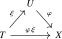
such that \(p(\xi ) \in C_L\) and \(\phi \xi \in E_L\), we have \(\xi \in E_L\);
- (3)
-
(Right cancellation for \(E_R\)) Given a commutative triangle
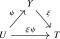
such that \(p(\xi ) \in C_R\) and \(\xi \psi \in E_R\), we have \(\xi \in E_R\);
- (4)
-
(Enough \(p\)-cocartesian lifts) For any pullback square in \(C\) of the form
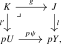
with \(l \in C_L\), and for any \(W \in E_{K}\), the morphism \(g\) admits a \(p\)-cocartesian lift \(\psi '\colon W \to V\) which lies in \(E_R\) and also satisfies the condition from (3);
- (5)
-
(Beck–Chevalley) Consider a commutative square in \(E\) of the form
such that its image in \(C\) is a pullback square, \(\xi ' \in E_L\), \(\psi ' \in E_R\), and \(p(\xi ) \in C_L\). Then \(\psi '\) is \(p\)-cocartesian if and only if \(\xi \in E_L\) and the square is a pullback square.
Proof. We consider any other span \(X \leftarrow W \to Z\) in \(E\). We have to show that every prescribed filling of the image in \(C\) of the following dashed diagram admits a unique lift to a filling in \(E\):
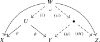
Here all left-pointing maps are in \(E_L\) and all right-pointing maps are in \(E_R\). By the description of the hom animae of a span category from Lemma 13.1.13, the anima of such fillings is precisely the fiber of the comparison map \[ \Hom _{\Span _{L,R}(E)}(Y,Z) \longrightarrow \Hom _{\Span _{L,R}(E)}(X,Z) \times _{\Hom _{\Span _{L,R}(C)}(pX,pZ)} \Hom _{\Span _{L,R}(C)}(pY,pZ) \] over the given point, so that showing all these fibers to be contractible is exactly showing that our span is \(\Span (p)\)-cocartesian. We produce the filling in three steps, each of which is unique up to a contractible choice.
- (i)
-
Since \(\phi \) is \(p\)-cartesian, there exists a unique lift \(W \to U\) making the left triangle commute, which lies in \(E_L\) by condition (2).
- (ii)
-
We claim that this lift \(W \to U\) may uniquely be written as the pullback along \(\psi \) of some morphism \(V \to Y\) in \(E_L\) compatible with the given pullback square in \(C\); more precisely, we claim that the following commutative square is a pullback square:
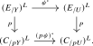
Here the superscript \((-)^{L}\) means that we take the full subcategories spanned by the morphisms in \(E_L\) and \(C_L\), respectively.
- (a)
-
For essential surjectivity of \((E_{/Y})^L \to (E_{/U})^L \times _{(C_{/pU})^L} (C_{/pY})^L\), we consider a morphism \(\xi '\colon W \to U\) in \(E_L\) and assume we are given a pullback square in \(C\) of the form
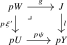
with \(l \in C_L\). By assumption (4) we can find a \(p\)-cocartesian lift \(\psi '\colon W \to V\) of \(g\) which lies in \(E_R\) and satisfies condition (3). The composite \(\psi \circ \xi '\colon W \to Y\) then factors through a map \(\xi \colon V \to Y\), giving a commutative square in \(E\) of the form considered in (5). By assumption (5), the map \(\xi \) then lies in \(E_L\) and the resulting square is a pullback square. As \(\xi \) lifts \(l\), this shows that the pair \((\xi ',l)\) lies in the essential image, as desired.
- (b)
-
For full faithfulness, consider two objects \(\xi _1\colon V_1 \to Y\) and \(\xi _2\colon V_2 \to Y\) of \((E_{/Y})^L\). We must show that the commutative square
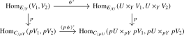
is a pullback square. By the universal property of pullbacks, the right vertical map is isomorphic to the map \[ p\colon \Hom _{E_{/Y}}(U \times _Y V_1, V_2) \to \Hom _{C_{/pY}}(pU \times _{pY} pV_1, pV_2), \] hence the claim follows from the fact that the projection map \(U \times _Y V_1 \to V_1\) is \(p\)-cocartesian: this is the implication from right to left in assumption (5), applied to the pullback square of \(\xi _1\) along \(\psi \), whose remaining two sides lie in \(E_L\) and \(E_R\) by adequacy. This morphism remains cocartesian after passing to the slice over \(Y\), since its cocartesian universal property is unchanged when the target is fixed.
- (iii)
-
Finally, given a \(p\)-cocartesian morphism \(W \to V\), the given map \(W \to Z\) uniquely factors through a map \(V \to Z\), which lies in \(E_R\) by condition (3). □
In practice, we will often be interested in the situation where the subcategories \(E_L\) and \(E_R\) of \(E\) are determined by \(C_L\), \(C_R\) and the functor \(p\colon E \to C\). To set this up, we start with the following auxiliary lemma:
Lemma 15.1.8. Let \(p\colon E \to C\) be a functor, and consider a commutative square \begin {equation*}
Proof. Consider for any object \(Z \in E\) the following two diagrams:
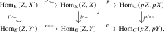
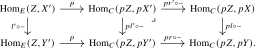
The right-hand squares of both diagrams are pullback squares: for the first one since \(l\) is \(p\)-cartesian, for the second one since the image of the given square in \(C\) is a pullback square. As the functor \(p\) preserves composition, the outer rectangles of both diagrams agree, so by the pasting law the left-hand square in the first diagram is a pullback square if and only if the left-hand square in the second diagram is a pullback square. Since the former holds for all \(Z\) if and only if the given diagram is a pullback square and the latter holds for all \(Z\) if and only if \(l'\) is \(p\)-cartesian, this finishes the proof. □
Proposition 15.1.9. Let \((C,C_L,C_R)\) be an adequate triple and let \(p\colon E \to C\) be a functor such that every morphism in \(C_L\) admits \(p\)-cartesian lifts with given target (for example: \(p\) is a cartesian fibration). Then:
- (1)
-
The triple \((E,E_L^{p\dcart },E_R)\) is adequate, where \(E_R := p^{-1}(C_R)\) consists of morphisms over \(C_R\) and \(E_L^{p\dcart } := p^{-1}(C_L) \cap E^{p\dcart }\) consists of \(p\)-cartesian morphisms over \(C_L\).
- (2)
-
The functor \(p\colon E \to C\) is a morphism of adequate triples.
Proof. Both classes are wide subcategories of \(E\): this is clear for \(E_R = p^{-1}(C_R)\), while \(E_L^{p\dcart }\) contains all identities and is closed under composition since \(C_L\) is and since composites of \(p\)-cartesian morphisms are again \(p\)-cartesian.
We next construct the pullback in \(E\) of a morphism \(l\in E_L^{p\dcart }\) along some \(r \in E_R\). Since \(pl \in C_L\) and \(pr \in C_R\), we may form the pullback
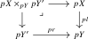
in \(C\). By assumption on \(p\), there exists a \(p\)-cartesian lift \(l'\colon X' \to Y'\) of the morphism \(pX \times _{pY} pY' \to pY'\). The composite \(rl'\colon X' \to Y\) then uniquely factorizes through some \(r'\colon X' \to X\) lifting the projection \(pX \times _{pY} pY' \to pX\), using that \(l\) is \(p\)-cartesian. All in all, we have lifted the pullback square in \(C\) to a commutative square in \(E\) of the form
Since \(l\) and \(l'\) are \(p\)-cartesian, it follows from Lemma 15.1.8 that this square is a pullback square in \(E\), showing that the required pullbacks exist. Moreover, in this square we have \(l' \in E_L^{p\dcart }\) and \(r' \in E_R\), so both classes are closed under the relevant base changes. This shows part (1).
For part (2), consider a pullback square in \(E\) of the form (15.1). We need to show that applying \(p\) to this square gives a pullback square in \(C\). Proceeding as before, we may always form the pullback of \(pl\) and \(pr\) in \(C\) and lift this to a pullback square in \(E\). But by uniqueness of pullback squares of \(l\) and \(r\), this new square must then agree with the given one. In particular their images in \(C\) agree, hence this image is a pullback square. □
Remark 15.1.10. For the morphism of adequate triples in the previous result, parts (2) and (3) of Theorem 15.1.7 follow from cancellation of \(p\)-cartesian morphisms and the definition of \(E_R\), respectively. For a \(p\)-cocartesian morphism \(\psi \colon U \to Y\) satisfying part (4), part (5) is precisely the invertibility of the Beck–Chevalley transformations \[ g_!{l'}^* \longrightarrow l^*(p\psi )_!\colon E_{pU}\longrightarrow E_J \] for the pullback squares in part (4). Here \((p\psi )_!\) exists by taking \(J=pY\) and \(l=\id \) in that condition.
We are now ready for the main result of this section.
Proof of Theorem 15.1.3. Condition (1) of Definition 15.1.2 and Proposition 15.1.9 show that \((E,E_L^{p\dcart },E_R)\) is adequate and that \[ \Span (p)\colon \Span _{\ct ,R}(E)\longrightarrow \Span _{L,R}(C) \] is defined. Given a span \(X \xleftarrow {l} U \xrightarrow {r} Y\) and an object over \(X\), choose a \(p\)-cartesian lift of \(l\) followed by a \(p\)-cocartesian lift of \(r\). In the criterion of Theorem 15.1.7, parts (2) and (3) hold by the preceding remark, part (4) follows from condition (2) of Definition 15.1.2 because \(g\) is a base change of \(r\), and part (5) follows from condition (3) and Lemma 15.1.8. Hence the chosen span is cocartesian, with transport \(r_!l^*\).
Finally, by Lemma 13.1.13, a morphism in the fiber over \(X\) is represented by a span whose backwards leg is \(p\)-cartesian over \(\id _X\), hence an isomorphism, and whose forward leg is an arbitrary morphism of \(E_X\). Thus this fiber is \(E_X\). □
Generated from the authoritative LaTeX source.